Este juego nos ayudara a tener un primer contacto con Stencyl.
Será nuestro personaje principal, y se moverá por la pantalla con las flechas derecha e izquierda. Saltará con la tecla de arriba. Dispara con el espacio. Cambia de color con la letra P. Lo pondremos opaco y con la letra I haremos que vuelva aparecer poco a poco y quitamos efectos gráficos y el color con la letra O. Tendrá 3 vidas.
Se movera de derecha a izquierda continuamente cambiando de animación. Y si toca al noni le quitara 1 vidas.
El noni dispara la bala con la tecla del espacio. Y si da al clown lo eliminara.
Haremos un escenario y en propiedades podemos cambiar el color del fondo a Gradiente Vertical con dos colores para el juego.
Y necesitaremos otro escenario de "Game Over" y otro de "You loose". Por si ganas o pierdes el juego.
El Juego es un Kit con lo cual ya vendrán todas las Entidades, Sonidos, y Set de Baldosas rellenos. Pero sin el código que lo tendrá que hacer el alumno. Para descargarte el kit de inicio pulsa aquí.
El juego consiste en que el Noni se mueve con las flechas de derecha e izquierda y podrá matar al Clown saltando sobre el ó disparándolo.
El Noni tendrá 3 vidas que se eliminarán si el Clown toca al Noni por los lados.
Y haremos diferentes efectos sobre el Noni mediante teclas.
Y en la escena apareceran las Vidas del Noni y los Enemigos que tengo que se irán restando cuando el Noni los vaya mantando.
Lo primero que tenemos que hacer para hacer un juego es crear un Escenario. En la pantalla principal dentro de Biblioteca hay una opción y seleccionamos "Escenas".
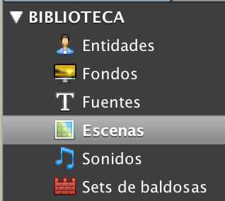
Pulsamos sobre el cuadrado que aparece.
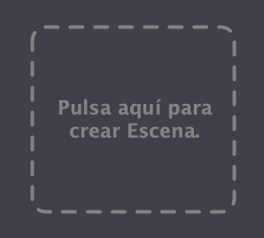
Y nos aparece una ventana con unas dimensiones ya definidas. Lo dejaremos asi. Le ponemos un nombre.
Podemos cambiar el color de la ventana a Color sólido/Sin color/Gradiente Vertical. Seleccionamos Grandiente Vertical y podemos seleccionar
dos colores para que quede chulo.
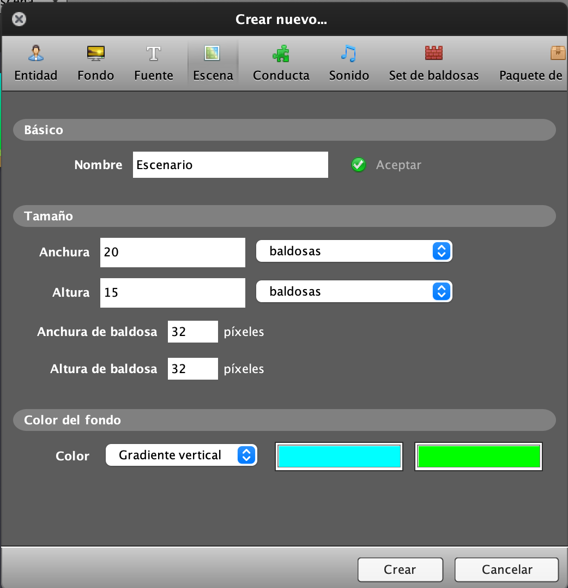
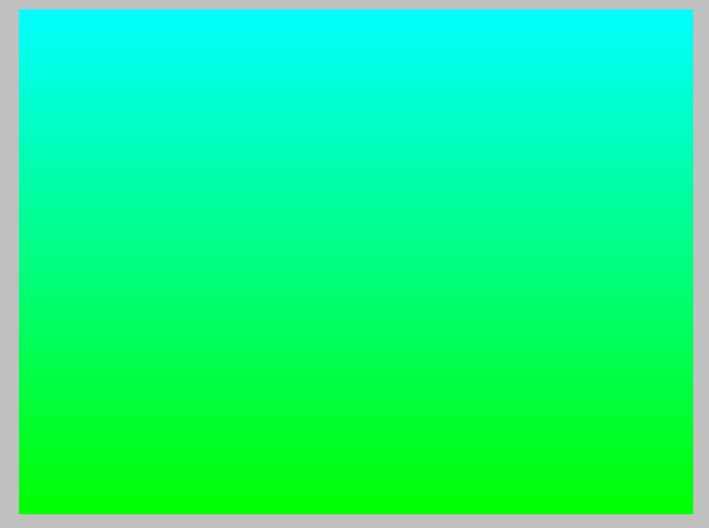
Vamos a ver un poco las opciones que tiene la Escena. A la derecha dos solapas Paleta e Inspector. Dentro de la Paleta aparecen otra dos solapas Baldosas( donde aparecerán las Baldosas para poder dibujar plataformas.....) y Entidades (donde aparecerán todas las entidades que tenemos disponibles para poder utilizar). En la solapa del Inspector no aparecera nada de momento ya que no tenemos ningún personaje dentro de la Escena.
Ls Baldosas se tendrán que meter dentro de Central del juego/Biblioteca/Set de baldosas.
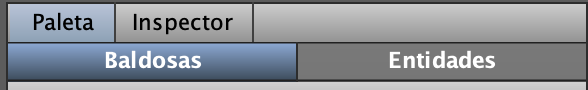
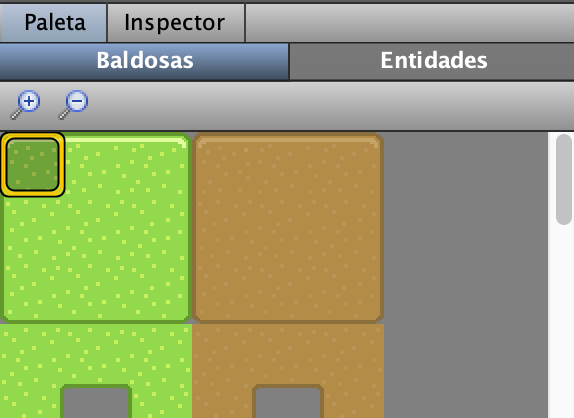
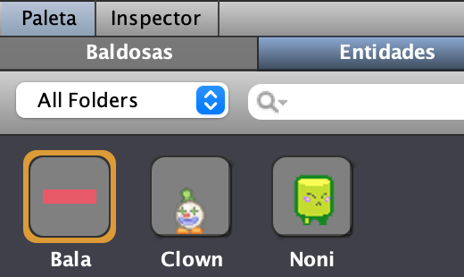
Para poder dibujar el suelo de nuestro juego vamos a Paleta/Baldosas y en la izquierda hay un menu y con el lápiz que aparece podemos dibujar y con la flecha podemos seleccionar y borrar lo que no queramos poner. También tenemos la opción a continuación del lápiz para dibujar en forma de rectángulo o de rellenar todo el Escenario que no tenga nada dibujado.
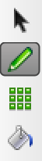
Seleccionamos el lápiz y ya podemos elegir la baldosa que queremos pintar. Y con el click izquierdo pintamos encima del Escenario. Si mantengo presionado el click izquierdo puedo seguir dibujando la misma baldosa. Dibujaremos 2 líneas de tierra y el césped (que jueguen un poco los alumnos y que lo dibujen como quieran).
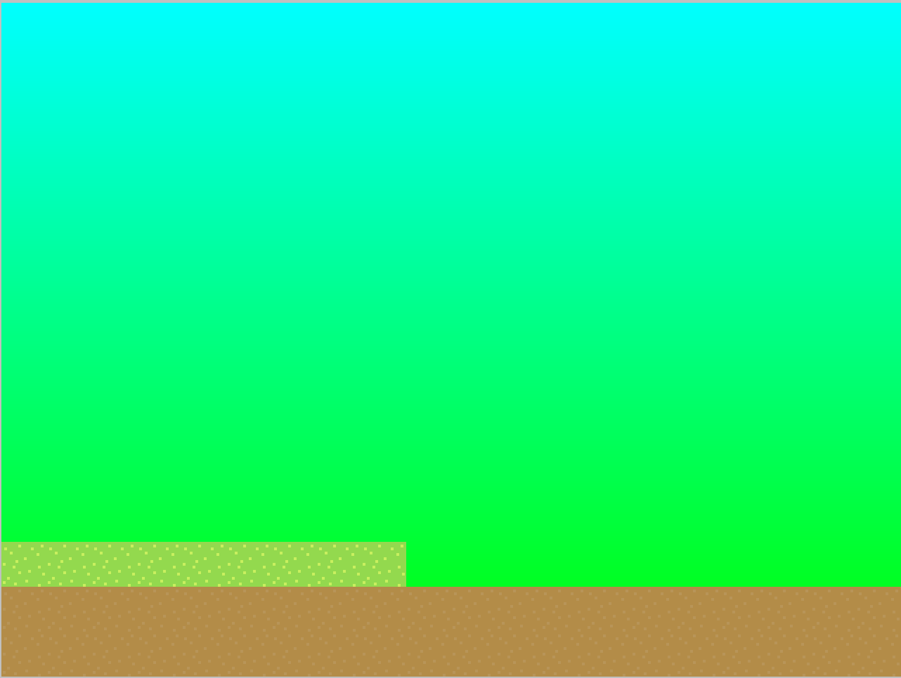
Ahora ya podemos seleccionar el Noni y el Clown y los ponemos en el Escenario de la siguiente manera.
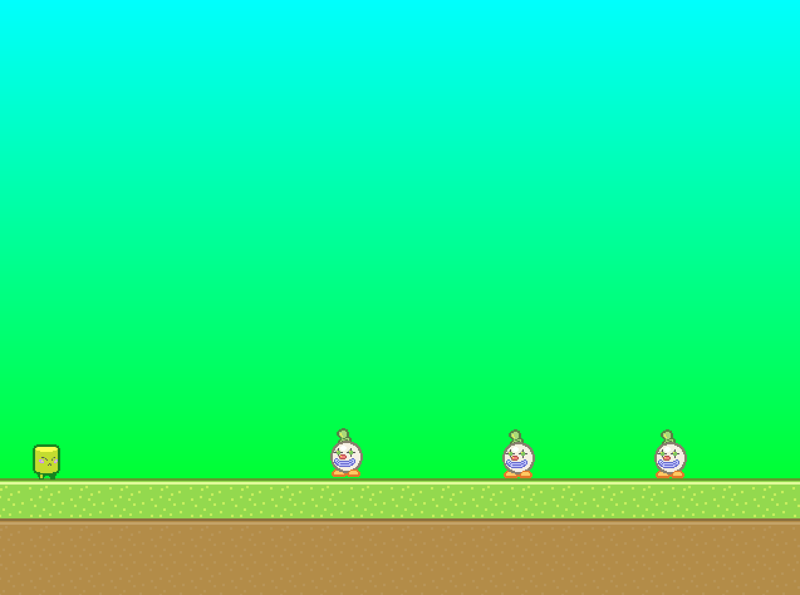
En la Escena podemos ver en la parte de arriba estas selecciones.
Las Conductas son comportamientos que podemos dar a nuestro juego como movimiento, morir...... Las Conductas que nosotros creamos las podemos
exportar y utilizar en otros juego pasándoles por parámetro pej en un comportamiento de movimiento del personaje que se va a mover, la
velocidad de su movimiento, las animaciones....... (lo veremos más adelante en otro juego).
Los Eventos es donde vamos a programar nuestro juego añadiendo Eventos. (Lo veremos más adelante).
La Física podrá ser Horizontal/Vertical. Pondremos Vertical hacia abajo. Podemos modificar el valor para que haga la gravedad más rápida ó
más lenta. Pondremos 45 pero que el alumno juego un poco para ver como funciona.
Atlases permite que Stencyl agrupar recursos en categorías y vincular esas categorías a escenas especificas para minimizar el uso de la
memoria. (Esto no nos hará falta para hacer este curso).
Y por último las Propiedades nos permitira cambiar el tamaño y el color de la Escena. Siempre usaremos por defecto baldosas.
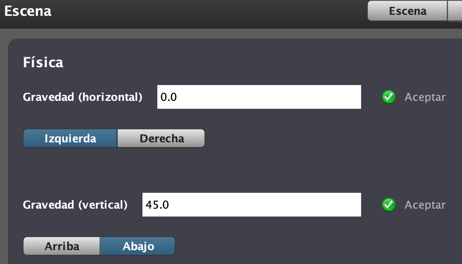
Otra información importante de la Escena es que en la parte de abajo a la derecha aparecen las Capas y el Inventory. Las Capas tendrán todas las capas incluyendo Fondos para poder hacer pej que se estén moviendo continuamente (Lo veremos en otros juegos). Es importante que la capa 0 que es sobre la que trabajamos este en la primera posición y seleccionada en azul para que podamos incluir los personajes que necesitamos en la Escena.
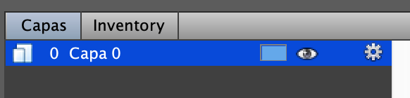
En el Inventory aparecerá todas las entidades que tengamos en el Escenario.
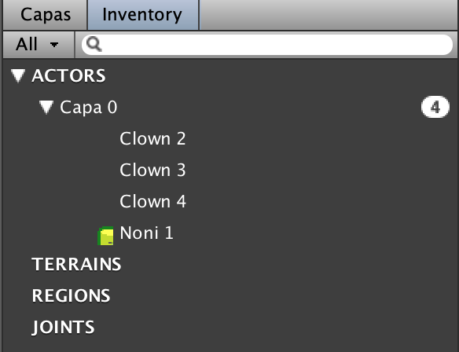
Vamos a comenzar a programar al Noni. El Noni se movera con la flechas izquierda/derecha/arriba (para saltar). Usaremos un Evento Updating. Lo añadiremos seleccionando "+ Add Event".
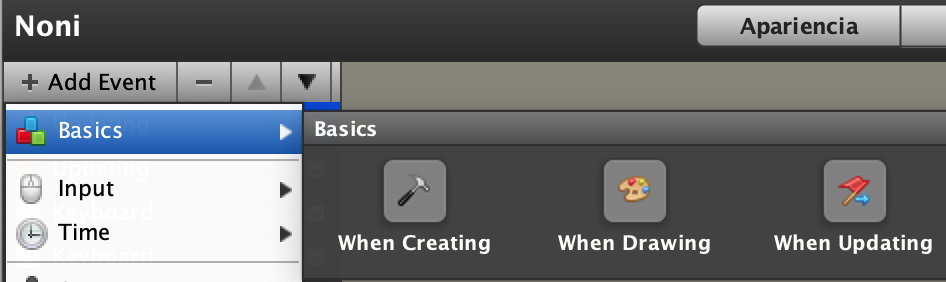
Si no queremos ese evento al lado esta el signo "-" y lo eliminará pero antes preguntará. Pero si queremos que no se use la programación del evento pero que no se borre el código por si lo necesitamos más adelante podemos quitar el check que aparece a su derecha y el juego se ejecutará normalmente pero no usará ese Evento.
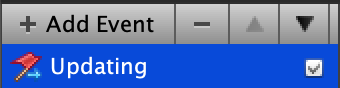
Una vez que tenemos añadido el Evento Updating tendremos que añadir el código. En la parte de la derecha aparecerán unos botones para poder seleccionar el bloque que necesitamos.
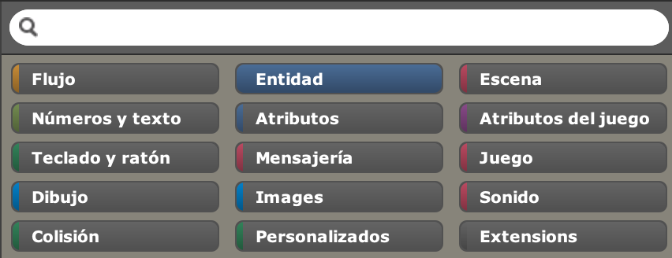
En nuestro caso hay que realizar la pregunta acerca de si hemos pulsado una tecla determinada. Para ello podemos seleccionar el botón de "Flujo/Condicional" y a "Teclado y ratón/Keyboard & Mouse". Y lo arrastramos a la parte izquierda. Y para el movimiento seleccionamos el botón "Entidad/Movimiento" y usaremos "set x-speed" para poder movernos en horizontal.
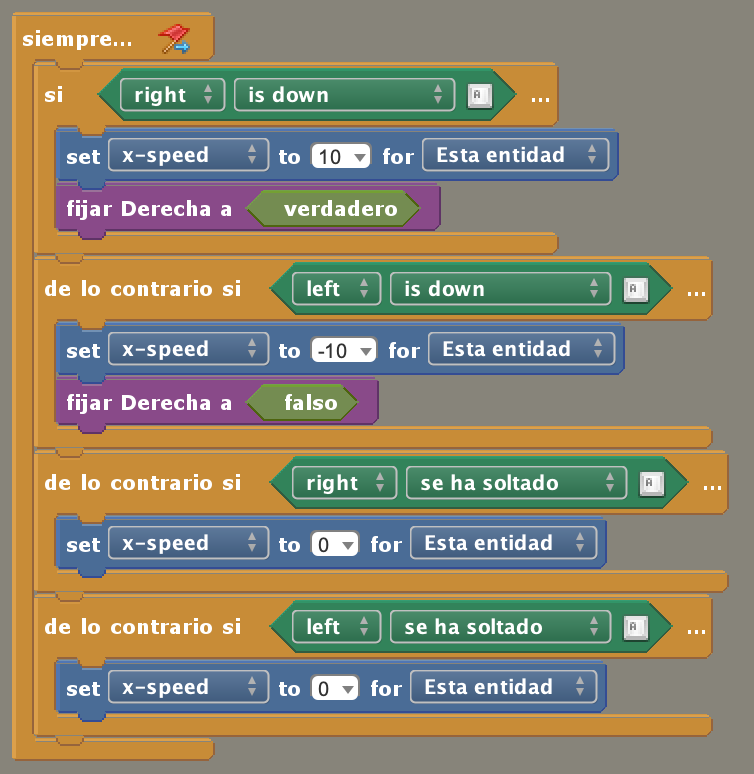
En X si vamos a la derecha serán valores positivos pero si vamos a la izquierda serán valores negativos. En Y si vamos hacia abajo serán valores positivos pero si vamos hacia arriba serán valores negativos.
Ahora haremos las animaciones del personaje. Pondremos otro Evento Updating (los tenemos separados para que sea más fácil de manejar a nivel de código). Los bloques de la animación estan en "Entidad/Dibujo" y pondremos los nombres que aparecen en la solapa de "Apariencia"
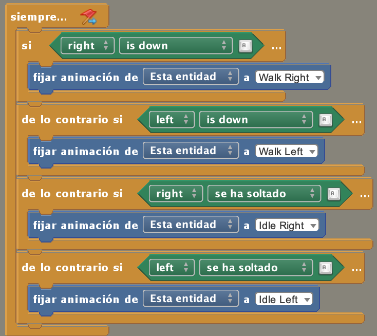
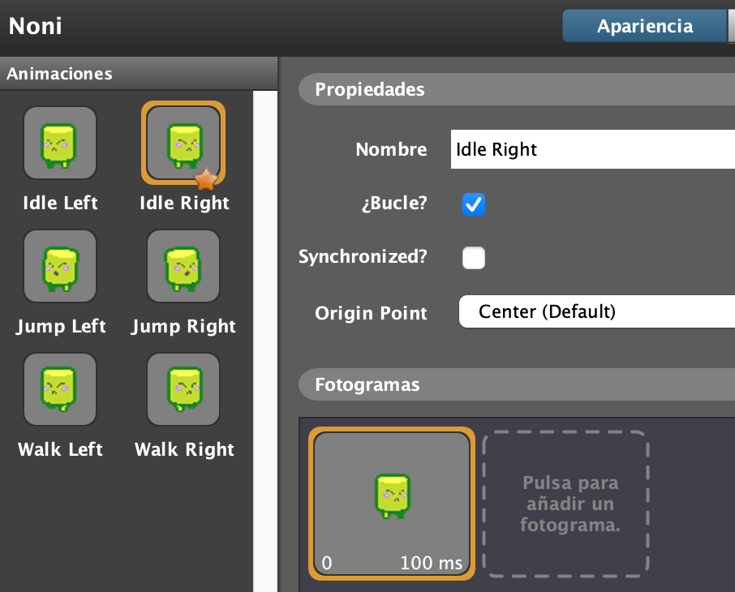
Tenemos que hacer que el Noni salte con la flecha de arriba. Para que pueda saltar tendra que estar tocando el Suelo y que no pueda estar saltando continuamente y que no parezca que este volando. Para ello crearemos un Atributo del Juego llamado "Suelo". Este atributo se puede crear desde "Settings/Atributos" o desde el Noni hay un botón a la derecha que es "Atributos del juego". Será de tipo boolean (verdadero/falso). Damos al botón de "Crear nuevo atributo del juego" y creamos la variable. Y por defecto la ponemos a "verdadero" ya que cuando comience el juego el Noni está tocando el suelo.
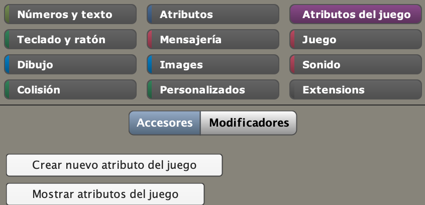
A veces cuando se crea el Atributo desde el personaje no aparece para poder modificar su valor. Así que hay que cerrar el personaje y volver abrir y asi actualiza las ventanas de los "Atributos del juego".
Para poder usar está variable tendremos que saber si está colisionando con el suelo. Para ello tenemos que definir bien los Grupos de Colisión que está dentro del botón de Settings.
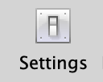
El Noni pertenece al grupo de colisión "Players" y colisiona con "Tiles" y con el "payaso".
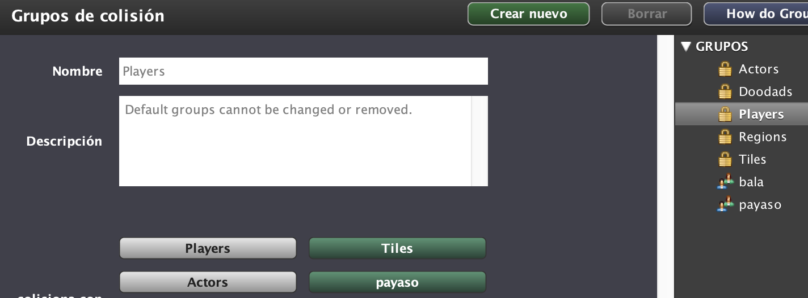
Tendremos que crear un Evento "Actor-Group". Cuando "Esta entidad" colisione con el grupo de las "Tiles". Pondremos la variable "Suelo" a verdadero.
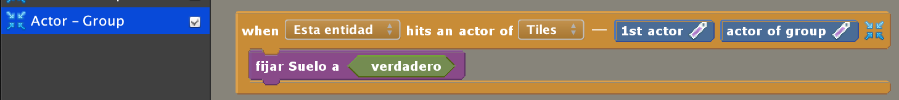
Añadimos otro evento "Updating" y si estamos tocando Suelo podremos dar a la tecla hacia arriba poniendole un sonido de Saltar.
Volviendo a dejar la variable "Saltar" a falso.
Y subiendo la "y-speed" hacia arriba con un valor negativo.
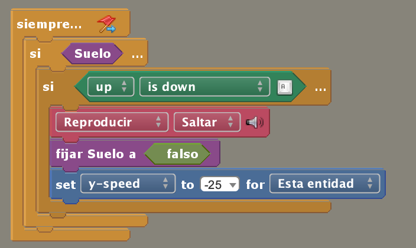
Haremos otro escenario de Game Over y otro de You loose y si la variable vida = 0 aparecera el Escenario de "You loose" y si la variable enemigos = 0 aparecera el Escenario de "Game Over".
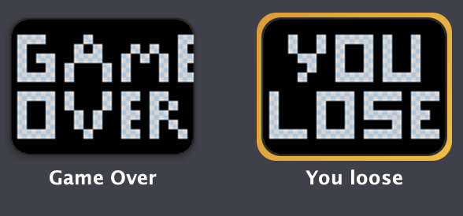
Vamos hacer algún efecto al Noni con las teclas. Para ello usaremos el Evento Input/Keyboard. Para añadir nuevas teclas iremos a Settings/Controles.
Tecla "P" para hacer efecto de color.
Tecla "I" Opacidad. En el Evento "Created" inicializaremos una variable de "Opacidad" a 100. En el Evento de Keyboard si esta a 100 lo volvemos
a inicializar a 10 y haremos un incremento de opacidad sumando 10 a esa variable.
Tecla "O". Desactivamos opacidad y quitamos todos los efectos.
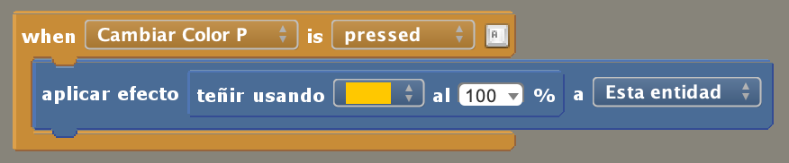
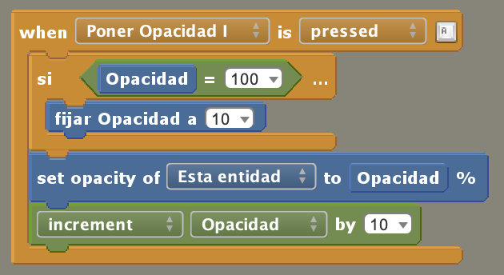
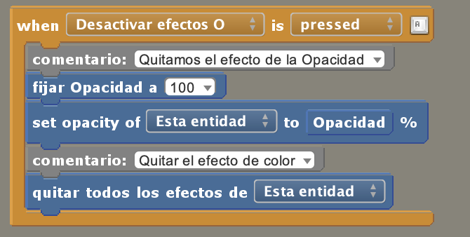
A los Eventos se les pueden poner nombre como está en el siguiente evento que también es de tipo Input/Keyboard y lo hemos llamado "Ataque".
Vamos hacer el disparo con la tecla Espacio.
En el "Updating" dependiendo hacia donde este mirando el Noni tendremos una variable boolena que nos indica a que dirección "Derecha" (verdadero/falso).
Asi podremos posicionar la bala a la derecha o a la izquierda del Noni y la podremos lanzar con "presionar" hacia un lado u otro.
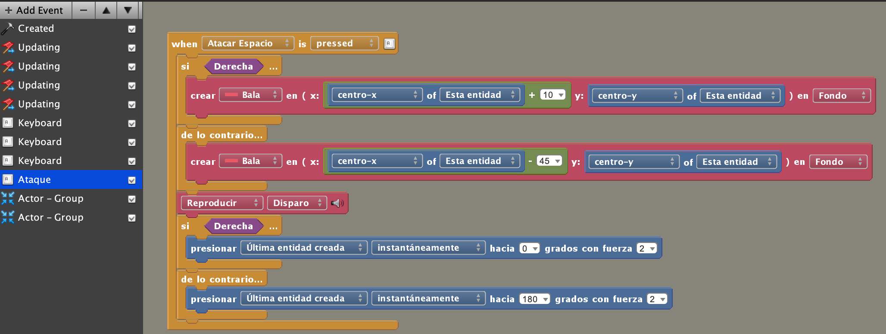
Nos faltaria hacer una última cosa dentro de los Eventos que es hacer una colision del Noni cuando toque por la derecha/izquierda al payaso.
Ponemos un nuevo Evento Collisions/Member of Group y hacemos que el grupo que pertenece al Nonicolisione con el grupo del payaso.
Para hacer este grupo vamos a Settings/Grupos y el payaso colisionara con los Players y con la bala.
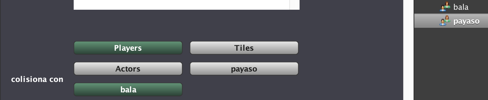
Cuando hacemos Eventos de Colisión podemos poner bloques de Colisión de la parte de la derecha para poder arrastrar.
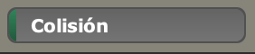
Si el Noni es golpeado por la derecha o por la izquierda quitamos vidas, hacemos un sonido y cambiamos de posición al Noni para que no le siga
quitando vidas.
Y si es golpeado por la parte de abajo hacemos como si rebotase subiendolo un poco, para despues hacer que el payaso cambie de disfraz y se muera
(esto lo haremos en el payaso).
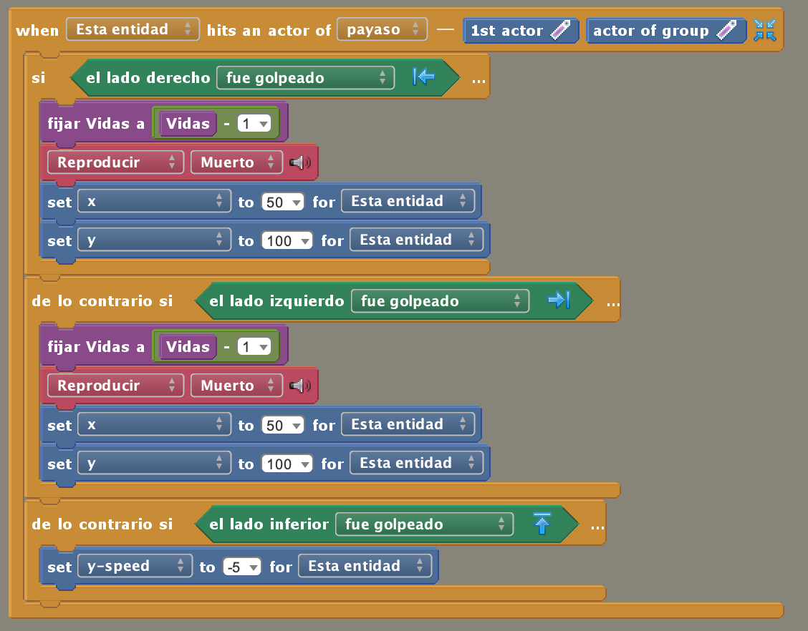
El Noni también tiene Física.
En Física/General pondremos la Física al Noni. El resto de las opciones en este juego no hace falta tocar nada. Pero el alumno puede investigar.
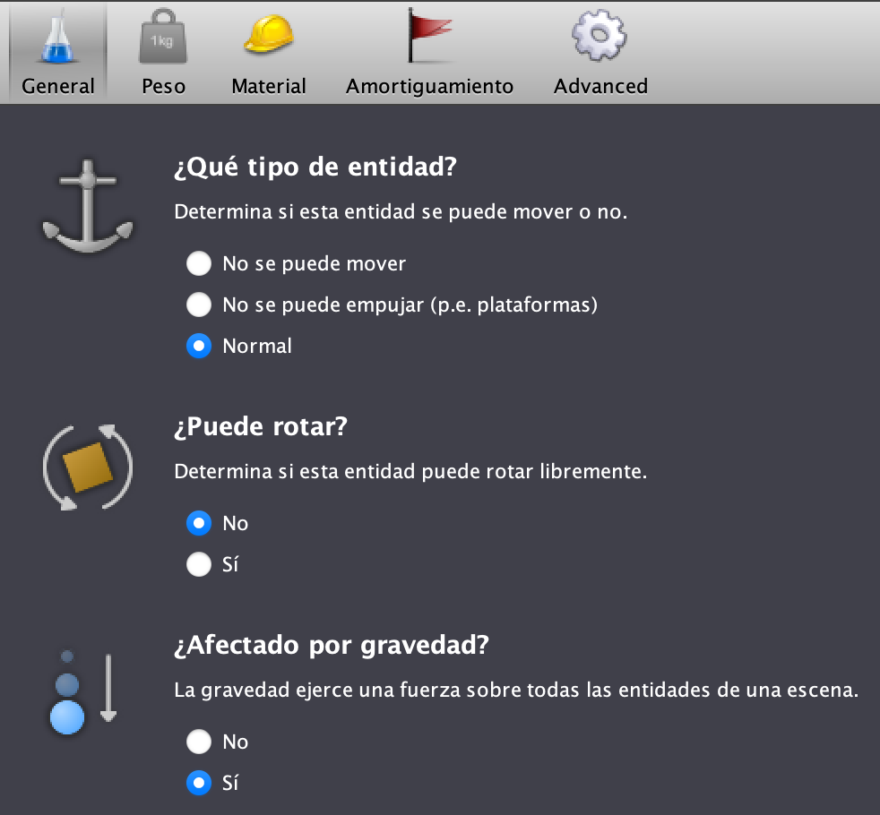
Y en Propiedades ponemos a que grupo de colisión pertenece el Noni.
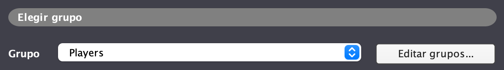
El Clown tiene 2 animaciones: Andar izquierda y Stomped que será la animación que pondremos cuando el Noni le toque por arriba y lo eliminemos.
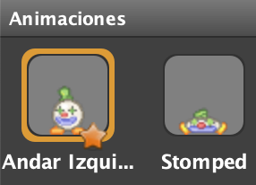
Necesitariamos otra animación de Andar Derecha. Para poder implementarla haremos lo siguiente.
- Seleccionar la animación Andar Izquierda.
- En el menu de Stencyl vemos Editar/Duplicar Animación y se duplicara.
- Tenemos que cambiar su dirección volvemos a seleccionar Editar/Voltear Horizontalmente.
- Solo faltaria cambiar el nombre de la animación a "Andar Derecha".
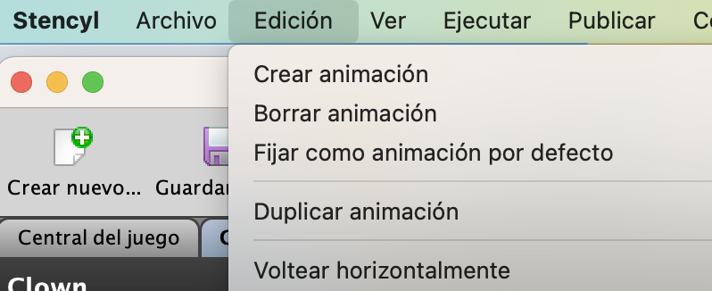
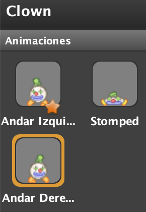
Evento de Updating y el Clown andara de izquierda a derecha continuamente y cuando llegue a una determinada posición crearemos una variable booleana "Derecha" (verdadero/falso).
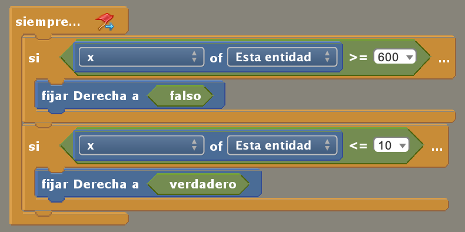
Otro Evento Updating y si "Derecha" es verdadero cambiar animación y que se mueva hacia la derecha y si es falso haremos lo contrario. Se movera mientras este vivo y no lo halla matado el Noni si ha sido golpeado por arriba, que cambiaremos su animación por el de Stomped y lo destruiremos al cabo de unos segundos.
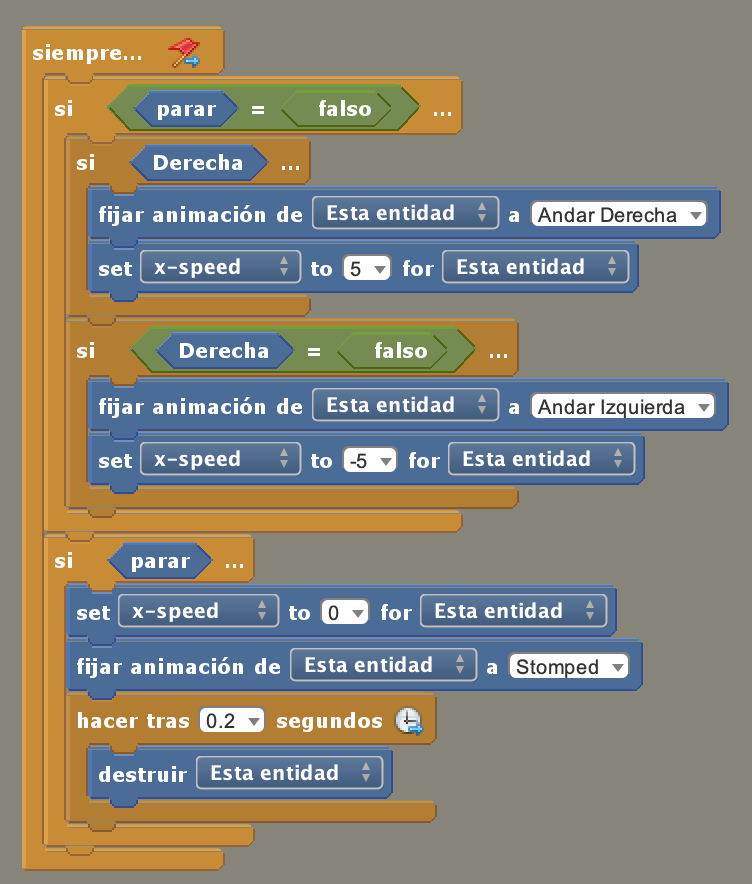
Y para hacer que colisione el Payaso con el Noni por la parte de arriba y ponemos un sonido, restamos 1 al atributo de Enemigos y la variable "parar" a verdadero para que en el Updating no siga moviendose....
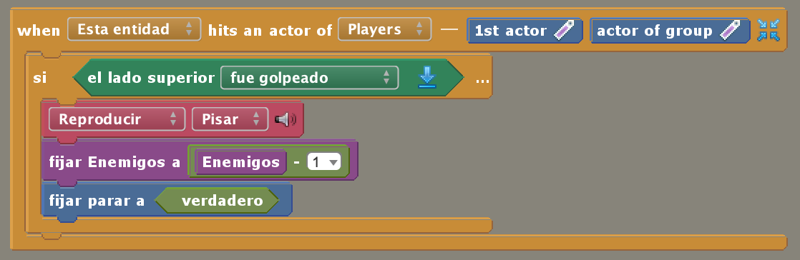
El Payaso también tiene Física.
En Física/General pondremos la Física al Payaso. El resto de las opciones en este juego no hace falta tocar nada. Pero el alumno puede investigar.
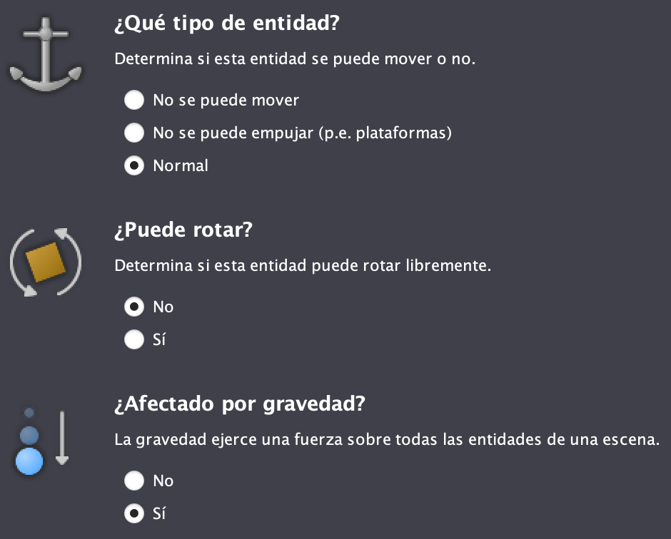
Y en Propiedades ponemos a que grupo de colisión pertenece el Payaso.
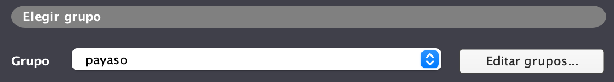
La Bala solo tiene una animación.
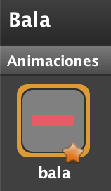
Solo tendrá un evento de tipo Collisions/Member of Group y hacemos que cuando la bala golpee al Payaso restamos al atributo Enemigos 1 y eliminamos tanto la bala como el Payaso.
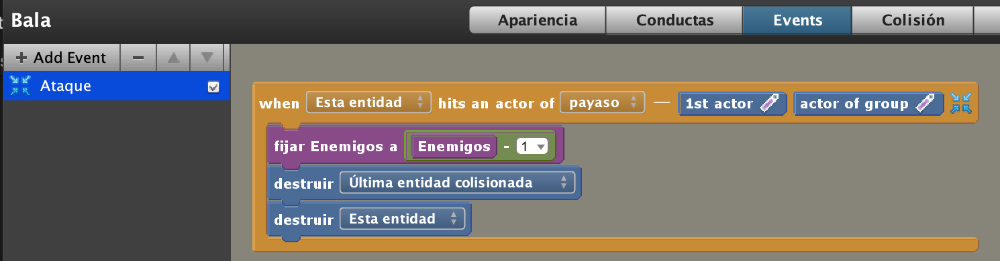
La Colisión están ya definidas tanto en la Bala como en el resto de las Entidades. Aunque si el alumno quiere podría modificarlo.
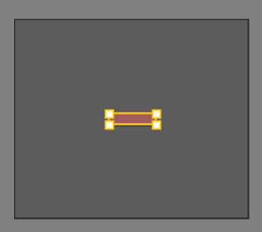
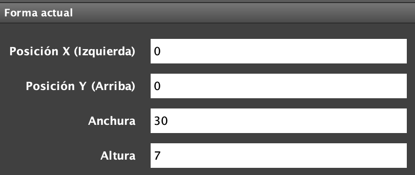
La Bala también tiene Física.
En Física/General pondremos la Física a la Bala. El resto de las opciones en este juego no hace falta tocar nada. Pero el alumno puede investigar.
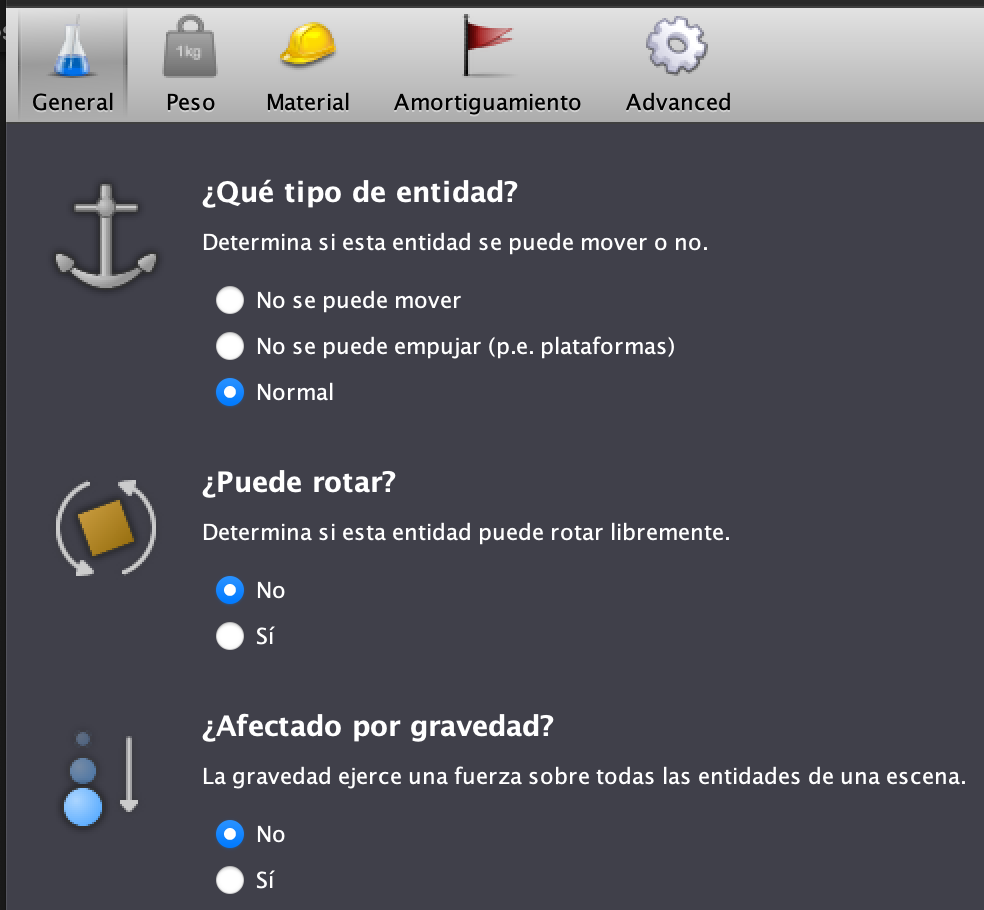
Y en Propiedades ponemos a que grupo de colisión pertenece la Bala.
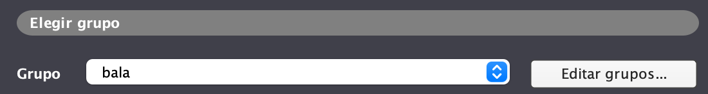
Y la Bala colisionara con el grupo de payaso.
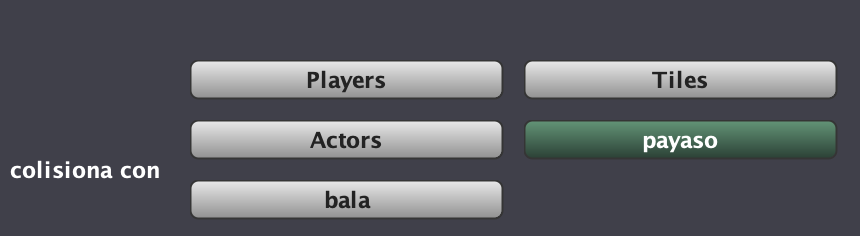
Tendremos 4 sonidos ya implementados.
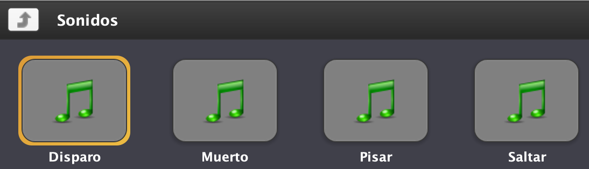
Tendremos 1 Set de baldosas.
Se puede añadir una plataforma y poner un Clown y que se mueva de izquierda a derecha continuamente en la plataforma.
- Tenemos que ir al Set de baldosas y las dos que sean con un final redondito le ponemos en "Data" cualquier texto como pej: Puntofinal.
- En el Escenario dibujamos la plataforma con esas dos baldosas a cada lado. Y ponemos a un Clown sobre la baldosa que no tenga está restricción.
- Crear en el Clown un Evento de Collision/Member of Group. Y hacemos la colisión de la entidad con las Tiles. Y preguntamos por
el texto que hemos escrito dentro de las tiles redondeadas.
- Preguntando por la x-speed del personaje usaremos el attibuto booleano Derecha para cambiar de dirección.
Hay que acordarse de cambiar la colisión de los Grupos de las Tiles y del Clown.